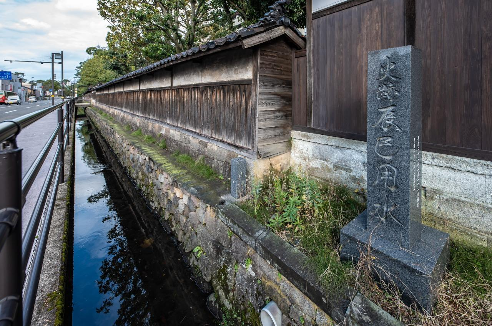
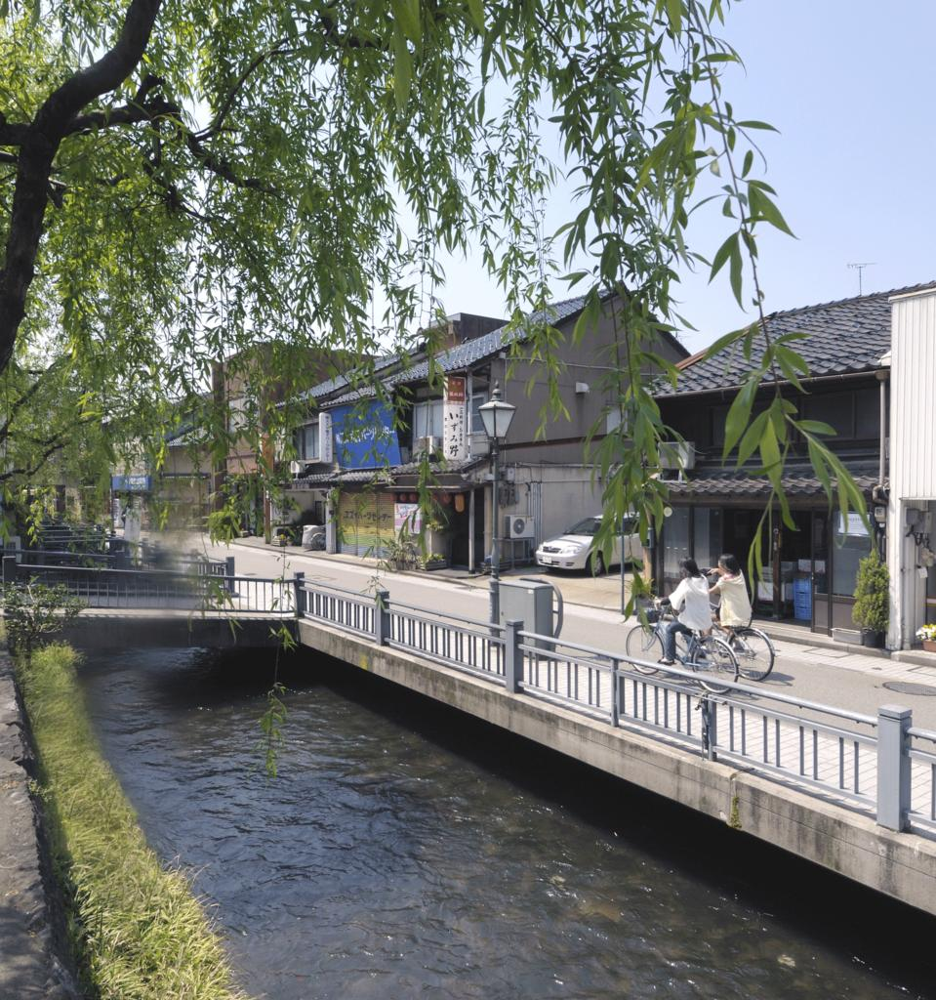
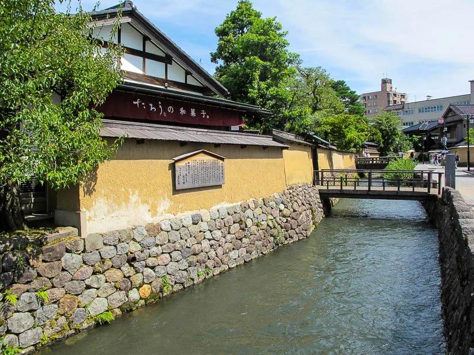

金沢と用水路の関係
金沢には、古くから多くの用水路が 張り巡らされています。 用水路は農業だけでなく、 人々の生活や城下町の発展を 支える役割も果たしてきました。
今も街の中を流れる用水路には、 金沢の歴史や文化が残されています。

01 / TATSUMI
辰巳用水
辰巳用水は、江戸時代の1632年に 造られた用水路です。 金沢城への水の供給や、 城下町を火災から守ることなどを 目的として整備されました。
見どころ
当時の優れた土木技術を知ることができ、 金沢の歴史を感じられる場所です。

02 / KURATSUKI
鞍月用水
鞍月用水は、金沢の城下町の暮らしを 支えてきた用水路の一つです。 水車の動力や生活用水など、 さまざまな用途で利用されてきました。
見どころ
街の中を流れる水路と周辺の建物が 調和した風景を楽しめます。 水の音を聞きながら歩くのもおすすめです。

03 / ONOSHO
大野庄用水
大野庄用水は、金沢の城下町の発展を 支えてきた歴史ある用水路です。 かつては物資の運搬などにも 利用されていました。
見どころ
長町武家屋敷跡周辺では、 土塀と用水路が並ぶ、 金沢らしい景色を楽しめます。